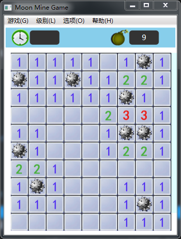
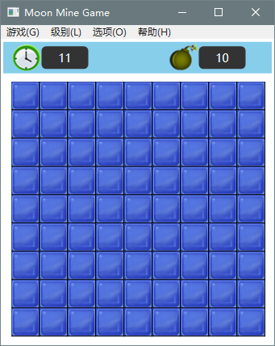

八、随机布雷
/// <summary>
/// 随机布地雷
/// </summary>
/// <param name="mineNum">地雷数</param>
private void SetRndMine(int mineNum)
{
for (int k = 0; k < mineNum; k++)
{
int nullnum = 0;
for (int j = 0; j < _gameLevel._colGrid; j++)
{
for (int i = 0; i < _gameLevel._rowGrid; i++)
{
if (_backData[j, i] == (int)BackState.BLANK)
nullnum++;
}
}
if (nullnum < 1)
return;
int index = rnd.Next(1, nullnum);
nullnum = 0;
for (int j = 0; j < _gameLevel._colGrid; j++)
{
for (int i = 0; i < _gameLevel._rowGrid; i++)
{
if (_backData[j, i] == 0)
{
nullnum++;
if (nullnum != index)
continue;
_backData[j, i] = (int)BackState.MINE; // 设置为地雷
}
}
}
}
}
这个方法是不是很熟悉，我们在2048游戏中用到过，这里就不再多说了。
九、设置地雷旁边的格子标注的地雷数值
原理就是读取地雷位置，然后分别给不是地雷的格子数值+1。/// <summary>
/// 设置地雷周围格子雷数
/// </summary>
private void SetCellMineNumber()
{
for (int y = 0; y < _gameLevel._colGrid; y++)
{
for (int x = 0; x < _gameLevel._rowGrid; x++)
{
if (_backData[y, x] == (int)BackState.MINE) // 遇到地雷则周围8格分别+1
{
if (x - 1 > -1 && y - 1 > -1 && _backData[y - 1, x - 1] != (int)BackState.MINE)
_backData[y - 1, x - 1]++;
if (y - 1 > -1 && _backData[y - 1, x] != (int)BackState.MINE)
_backData[y - 1, x]++;
if (y - 1 > -1 && x + 1 < _gameLevel._rowGrid && _backData[y - 1, x + 1] != (int)BackState.MINE)
_backData[y - 1, x + 1]++;
if (x - 1 > -1 && _backData[y, x - 1] != (int)BackState.MINE)
_backData[y, x - 1]++;
if (x + 1 < _gameLevel._rowGrid && _backData[y, x + 1] != (int)BackState.MINE)
_backData[y, x + 1]++;
if (y + 1 < _gameLevel._colGrid && x - 1 > -1 && _backData[y + 1, x - 1] != (int)BackState.MINE)
_backData[y + 1, x - 1]++;
if (y + 1 < _gameLevel._colGrid && _backData[y + 1, x] != (int)BackState.MINE)
_backData[y + 1, x]++;
if (y + 1 < _gameLevel._colGrid && x + 1 < _gameLevel._rowGrid && _backData[y + 1, x + 1] != (int)BackState.MINE)
_backData[y + 1, x + 1]++;
}
}
}
}
十、设置背景区图片组
循环读取背景区数据，根据数值设置对应的图片源。
private void SetBackCellImage()
{
BackCanvas.Children.Clear();
for (int y=0; y<_gameLevel._colGrid; y++)
{
for (int x=0; x<_gameLevel._rowGrid; x++)
{
_backImage[y, x] = new Image();
if (_backData[y, x] == (int)BackState.BLANK)
{
_backImage[y, x].Source = ImageHelper.CutImage(_bmpSpace, new Int32Rect(0, 0, _cellSize.Width, _cellSize.Height));
}
else if (_backData[y, x] == (int)BackState.MINE)
{
_backImage[y, x].Source = ImageHelper.CutImage(_bmpMine, new Int32Rect(0, 0, _cellSize.Width, _cellSize.Height));
}
else
{
for (int i = 0; i < 8; i++)
{
if (_backData[y, x] == (i+1))
{
_backImage[y, x].Source = ImageHelper.CutImage(
_bmpNum1_8, new Int32Rect(i * _cellSize.Width, 0, _cellSize.Width, _cellSize.Height));
break;
}
}
}
_backImage[y, x].SetValue(Canvas.LeftProperty, x * (double)_cellSize.Width);
_backImage[y, x].SetValue(Canvas.TopProperty, y * (double)_cellSize.Height);
BackCanvas.Children.Add(_backImage[y, x]);
}
}
}
十一、开始游戏准备
根据游戏级别分别调用随机布雷、设置雷边数值方法，同时添加背景图片数组到游戏背景区。
private void ResetGame()
{
InitialGameState();
InitGameData(_level);
textBlockMineNum.Text = _gameLevel._mineNum.ToString();
SetRndMine(_gameLevel._mineNum);
SetCellMineNumber();
SetBackCellImage();
}将该方法添加到开始游戏菜单中，并计时器打开。
private void MenuGameStart_Click(object sender, RoutedEventArgs e)
{
ResetGame();
_gameState = GameState.START;
// 开始计时
_stopWatchGame.Start();
_timerSetTimeText.Start();
}重复点击开始菜单，看看效果。

十二、调整游戏级别
根据菜单设置的当前级别值设置菜单选择状态。
/// <summary>
/// 设置级别菜单状态
/// </summary>
/// <param name="level"></param>
private void SetMenuLevelState(Level level)
{
switch (level)
{
case Level.SIMPLE:
MenuLowLevel.IsChecked = true;
MenuMiddleLevel.IsChecked = false;
MenuHighLevel.IsChecked = false;
break;
case Level.NORMAL:
MenuLowLevel.IsChecked = false;
MenuMiddleLevel.IsChecked = true;
MenuHighLevel.IsChecked = false;
break;
case Level.HARD:
MenuLowLevel.IsChecked = false;
MenuMiddleLevel.IsChecked = false;
MenuHighLevel.IsChecked = true;
break;
}
}/// <summary>
/// 初级级别菜单
/// </summary>
/// <param name="sender"></param>
/// <param name="e"></param>
private void MenuLowLevel_Click(object sender, RoutedEventArgs e)
{
if (_level == Level.SIMPLE)
return;
if (MessageBox.Show("将用新难度级别重置游戏，确认要继续吗？", "警告", MessageBoxButton.YesNo, MessageBoxImage.Asterisk)
== MessageBoxResult.Yes)
{
_level = Level.SIMPLE;
SetMenuLevelState(_level);
ResetGame();
}
}
/// <summary>
/// 中级级别菜单
/// </summary>
/// <param name="sender"></param>
/// <param name="e"></param>
private void MenuMiddleLevel_Click(object sender, RoutedEventArgs e)
{
if (_level == Level.NORMAL)
return;
if (MessageBox.Show("将用新难度级别重置游戏，确认要继续吗？", "警告", MessageBoxButton.YesNo, MessageBoxImage.Asterisk)
== MessageBoxResult.Yes)
{
_level = Level.NORMAL;
SetMenuLevelState(_level);
ResetGame();
}
}
/// <summary>
/// 高级级别菜单
/// </summary>
/// <param name="sender"></param>
/// <param name="e"></param>
private void MenuHighLevel_Click(object sender, RoutedEventArgs e)
{
if (_level == Level.HARD)
return;
if (MessageBox.Show("将用新难度级别重置游戏，确认要继续吗？", "警告", MessageBoxButton.YesNo, MessageBoxImage.Asterisk)
== MessageBoxResult.Yes)
{
_level = Level.HARD;
SetMenuLevelState(_level);
ResetGame();
}
}
十三、设置前景区图片组
/// <summary>
/// 设置前景图片数组
/// </summary>
private void SetForeCellImages()
{
ForeCanvas.Children.Clear();
for (int y = 0; y < _gameLevel._colGrid; y++)
{
for (int x = 0; x < _gameLevel._rowGrid; x++)
{
if (_foreData[y, x] > (int)ForeState.NONE)
{
_foreImage[y, x] = new Image();
_foreImage[y, x].Source = ImageHelper.CutImage(_bmpForeground, new Int32Rect(0, 0, _cellSize.Width, _cellSize.Height));
_foreImage[y, x].SetValue(Canvas.LeftProperty, x * (double)_cellSize.Width);
_foreImage[y, x].SetValue(Canvas.TopProperty, y * (double)_cellSize.Height);
ForeCanvas.Children.Add(_foreImage[y, x]);
}
}
}
}在ResetGame()方法最后位置加入对该方法的调用。
运行程序，看看效果。
